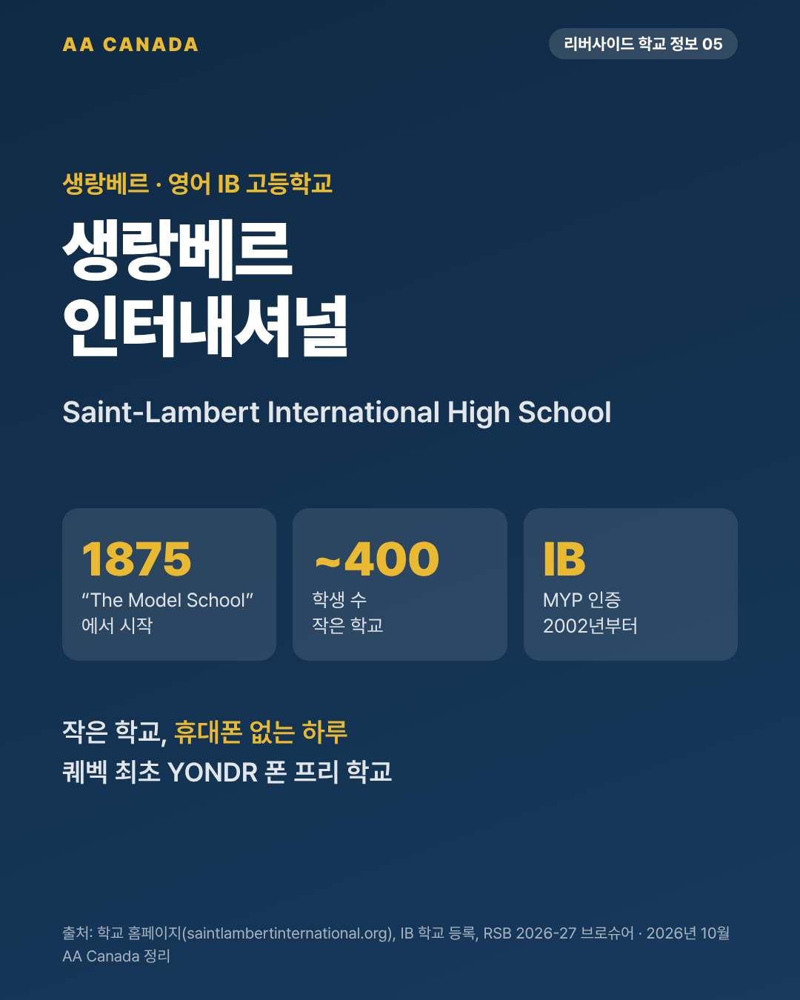

생랑베르 인터내셔널 고등학교 (Saint-Lambert International High School, SLI)

기준일 2026-10-21 · AA Canada 정리
교육청 공통 정보는 리버사이드 교육청 공통 안내를 보세요.
한 줄 요약: 1875년에 시작한 작은 IB 학교. 퀘벡 최초로 휴대폰을 잠가 두는 "폰 프리" 학교입니다.
한눈에 보기
| 항목 |
내용 |
| 주소 |
675 Green Street, Saint-Lambert, QC J4P 1V9 |
| 연락처 |
450-671-5534 · sli@rsb.qc.ca · https://www.saintlambertinternational.org/ |
| 학년 |
Secondary 1~5 (중1~고2) |
| 학생 수 |
약 370~500명 (위키백과, 브로슈어 "약 400명") |
| 수업 시간 |
9:10~15:40 (RSB 학교 페이지) |
| 교장 |
Jamie Allan (2026-27 학교운영위원회 명단) |
| 인증 |
IB 월드스쿨, MYP 인증 2002년 7월 |
| 역사 |
1875년 "The Model School" → St. Lambert Academy(1896) → Chambly County High School → Chambly Academy. 건물 1954년, 2009년 증축. 학교색 검정·빨강 |
이 학교만의 특징
1. IB MYP 학교
- 학교가 스스로를 "영어 IB 고등학교"라고 소개합니다(만 11~16세 IB 중등 프로그램).
- 마지막 학년에 개인 프로젝트(Personal Project)를 합니다.
- 봉사 학습 필수: Secondary 1~2는 연 2~3개, Secondary 3~5는 연 3~4개 활동. 디지털 기록으로 관리.
- 봉사 예: 낙엽 쓸기, 모금 행사 Up With Adam, SLI 홍보대사, 크리스마스 바구니, 또래 튜터링, 에코 동아리 Green on Green, 초등학교 연계 프로젝트
2. 퀘벡 최초 "YONDR" 폰 프리 학교
- 등교하면 휴대폰을 잠금 파우치(YONDR)에 넣고 하루 종일 쓰지 않습니다.
- 2025-26부터 퀘벡 전체가 학교 휴대폰 금지를 시작했지만, SLI는 그보다 먼저 도입했습니다.
3. 복장 규정 (교복에 가까움)
- 학교 로고 외 다른 로고(1제곱인치 초과), 줄무늬, 무늬 옷 금지.
- 검정·흰색·빨강 SLI 의류가 복장 규정에 맞는 옷이고, 외부 업체에서 주문합니다.
- 교내 중고가게 "A Second Look"에서 저렴하게 구할 수 있습니다.
프로그램
- 불어 3단계 (Secondary 1): FSL(제2외국어), FRE(심화), FRA(모국어 수준)
- Secondary 1 지리·역사는 불어로 수업합니다. 불어가 처음인 유학생은 이 부분을 미리 알고 오면 좋습니다.
- 학습 지원: 월~수 15:45~16:45 도서관에서 방과후 학습 도움
학교생활
- 운동부: 육상(가장 큰 팀), 컬링(헤리티지·센테니얼과 대항), 축구
- 행사: 학생회 리더십 캠프(Parkside Ranch), Secondary 5 체육 여행(Oasis Surf)
- 학생 수가 적어 선생님이 학생을 잘 아는 분위기입니다.
학업 성적 지표
- Fraser Institute 2025 퀘벡 고교 평가: 10점 만점에 약 4.4점.
- IB 학교는 주정부 시험 성적만으로 보는 이 지표에 학교의 특징(탐구 수업, 개인 프로젝트, 봉사)이 잘 드러나지 않습니다. 숫자만 보지 말고 학교 방식을 같이 보세요.
AA Canada 코멘트: 이런 학생에게 추천
- 작은 학교에서 선생님과 가깝게 지내고 싶은 학생. 큰 학교가 부담스러운 학생에게 맞습니다.
- IB 방식(탐구, 프로젝트, 봉사)을 경험하고 싶은 학생.
- 휴대폰 습관이 걱정되는 부모님. 학교가 하루 종일 휴대폰을 잠가 둡니다.
- 생랑베르는 몬트리올 시내와 다리 하나 사이인 조용한 주택가입니다. 교육청 특수교육 학교 REACH의 새 건물이 바로 옆에 지어지고 있습니다(2025년 3월 착공).
출처
- 학교 홈페이지 https://www.saintlambertinternational.org/ (IB, 역사, 복장 규정, YONDR, Secondary 1, 봉사, 운동부, 학교운영위원회 페이지)
- IB 학교 등록: https://ibo.org/school/001855/
- RSB 학교 페이지: https://www.rsb.qc.ca/school/saint-lambert-international-high-school/
- 위키백과: https://en.wikipedia.org/wiki/Saint-Lambert_International_High_School
- Fraser Institute 2025 보고서
- RSB REACH 착공 보도자료(2025-03): https://www.rsb.qc.ca/wp-content/uploads/2025/03/20250311_Pelleteedeterre_REACH_BIL_O.pdf